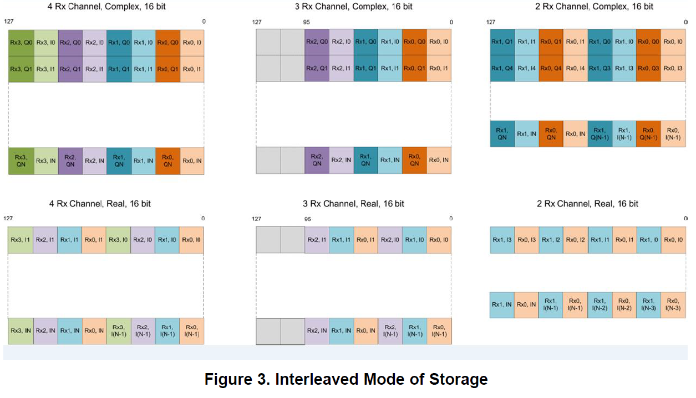
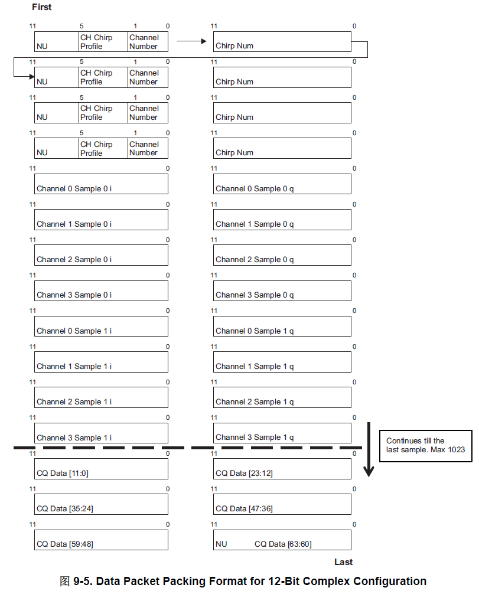
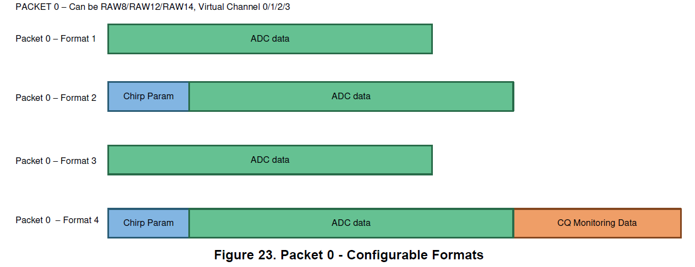

关于雷达 AWR2243 ADC OVER CSI HSI
AWR2243 的 CSI2 支持最高数据位速率（Data bit rate）为 600Mbps，DDR 时钟最高为 300Mhz。外部处理器 CSI2 支持的最高时钟至少要等于 AWR2243 配置的 CSI2 输出时钟。
AWR2243 Data Sources
Input Sources
- DFE(digital front-end) — 设备实时数据
- HIL(hardware in the loop) — 数据回放
Interleaved and Non-Interleaved Modes
在 AWR12xx, AWR22xx, 和 XWR14xx 器件变体上，建议使用交织存储模式，因为它还有助于通过相应通道轻松映射和传输每个 RX 通道数据。
AWR2243 的 ADC 存储器对于数据存储可以配置为交织模式或者是非交织模式。
在交织模式下，ADC 数据是以采样点为间隔在不同接收通道下交织输出。对于非交织模式，ADC 数据按照接收通道把一个接收通道的完整的一个 chirp 数据输出后再输出另一个接收通道的数据。对于不同的模式，外部处理器在获取数据后，需要使用 EDMA 或者其他处理代码，正确重组数据，进行处理。在 mmwave_mcuplus_sdk_04_02_00_02 的例程里，DDMA 的例程使用了交织模式，TDMA 的例程使用了非交织模式。
下面是不同模式数据数据输出的一个例子，Rx0、Rx1、Rx2、 Rx3 表示不同的接收通道。接收通道后面的数字表示采样点个数。N+1为每个 chirp 的采样点数。
交织模式
Rx00 Rx10 Rx20 Rx30 Rx01 Rx11 Rx21 Rx31…….Rx3N
非交织模式
Rx00 Rx01 Rx02 Rx03…..Rx0N Rx10 Rx11 Rx12 Rx13…….Rx3N
AWR2243 CSI2 接口输出的原始 ADC 数据格式
外部处理器的 CSI2 数据格式配置需要和AWR2243的ADC数据位数匹配。如果ADC数据位12位，外部处理器的CSI2的数据格式要配置为RAW12。如果ADC数据位14位，外部处理器的CSI2的数据格式要配置为RAW14。如果ADC数据为16位，外部处理器的CSI2数据格式要配置为RAW8。
如果ADC数据为16位复数，对于一个采样点，AWR2243的CSI2接口上会先输出16位实部数据的低8位，然后输出实部数据的高8位，接下来输出虚部数据的低8位，最后是虚部的高8位。
CSI是Camera Serial Interface的缩写，也就是摄像头串行接口，这个接口设计之初是用于摄像头传感器。在AWR2243上把一帧毫米波的数据模拟成宽度x高度的图像帧通过CSI2输出。一帧毫米波数据通过CSI2输出的帧的宽度和高度可以根据下面的公式进行计算。外部处理器可以根据下面的公式判断采集到的CSI2数据的数量是否和毫米波射频配置一致。
分辨率配置
CSI2帧的宽度（单位：位） = 每个chirp的采样点数 x 接收通道数 x 2（复数采样）或者1（实时采样）x 每个采样点的位数
CSI2帧的高度 = 每帧包含的chirp个数
-
图像格式：RAW14，分辨率 3072 * 512
-
Width = 384 * 4(CH) * 2(复数采样) * 14 (每个采样点的位数 RAW14) = 3072 * 14 (bits）
-
Height = 512

RAW Data Over D-PHY
RAW10 格式具有 10 位像素值，但 CSI-2 标准指定最小数据宽度为 1 字节。由于无法传输部分像素数据，因此 CSI-2 根据所使用的像素格式具有各种像素打包标准。 10 位 RAW 像素数据的传输是通过将 4 个 10 位像素值打包到 5 个字节（5 * 8 位（1 字节）= 40 位）来完成的。这种情况下的最小数据包长度始终为 5 个字节。该标准以每像素位数值为基础，并查找必须是 1 字节（8 位）倍数的值。如果要平移的行的像素宽度不能被五整除，则多余的像素将用零填充。下表显示了 CSI-2 支持的格式数据包数据大小限制。
| Data format 数据格式 | Bits per Pixel (bpp) 每像素位数 (bpp) | Pixels per packet (min) 每个数据包的像素（分钟） | Packet length (byte) 数据包长度（字节） |
|---|---|---|---|
| YUV420 8-bit (legacy) YUV420 8 位（传统） | 12 | 2 | 3 |
| YUV420 8-bit YUV420 8 位 | 12 | 2 | 2/4 |
| YUV420 10-bit YUV420 10 位 | 15 | 4 | 5/10 |
| YUV422 8-bit YUV422 8 位 | 16 | 2 | 4 |
| YUV422 10-bit YUV422 10 位 | 20 | 2 | 5 |
| RGB888 RGB888 | 24 | 1 | 3 |
| RGB666 RGB666 | 18 | 4 | 9 |
| RGB565 RGB565 | 16 | 1 | 2 |
| RGB555 RGB555 | 15 | 1 | 2 |
| RGB444 RGB444 | 12 | 1 | 2 |
| RAW6 RAW6 | 6 | 4 | 3 |
| RAW7 RAW7 | 7 | 8 | 7 |
| RAW8 RAW8 | 8 | 1 | 1 |
| RAW10 原始10 | 10 | 4 | 5 |
| RAW12 RAW12 | 12 | 2 | 3 |
| RAW14 RAW14 | 14 | 4 | 7 |
AWR2243 package

如上图，AWR2243 MIPI package，一个 Long Package DATA 包含了 1 整个 chirp 的数据。
Data Payload
The data payload is constructed with the following three types of information:
- Chirp profile information
- The actual chirp number
- ADC data corresponding to chirps of all four channels
- Interleaved fashion
- Chirp quality data (configurable)
The payload is then split across the four physical data lanes and transmitted to the receiving D-PHY. The data packet packing format is shown in

Packet Formats (AWR22xx/AWR12xx)
The packet formats supported on AWR22xx/AWR12xx devices is shown below and is selected by issuing the data path configuration API.
- Packet 0 • On CSI2, the data can be RAW8/RAW12/RAW14 format and sent on any of the four configured virtual channels. • On LVDS, the data format can be 12/14/16 bit and are mapped onto the different lanes based on a format mapping selection done (using LVDS configuration API).

参考资料
- AWR1xx and AWR22xx Data Path Programmer’s Guide (Rev. A)
- AWR2243 单芯片、76GHz 至 81GHz FMCW 收发器 数据表 (Rev. C)
- [AWR2243 CSI2接口详解](https://e2echina.ti.com/blogs_/b/the_process/posts/awr2243-csi2?keyMatch=MMWAVE%20PACKET%20FORMAT&_ticdt=MTY5MTQ3NTA1M3wwMTg5OTUxYTNkMzMwMDE3OTY5ZGVlMDYxMmIzMDUwNmYwMDE2MDY3MDBjOTl8W29iamVjdCBPYmplY3Rd)
- AWR2243 datasheet
- MMWAVE-DFP-2G 02.02.03.01
- AWR2243: AWR2243 CSI2 pixel format problem - Sensors forum - Sensors - TI E2E support forums
- AWR1243: data packet packing format for RAW8 mode (8-bit) - Sensors forum - Sensors - TI E2E support forums
- AWR1243: Clarifications on modes and frames - Sensors forum - Sensors - TI E2E support forums
- AWR2243: Relation between CSI lane position and CSI pin - Sensors forum - Sensors - TI E2E support forums
- IWR1443: output width and height of CSI frame - Sensors forum - Sensors - TI E2E support forums
- https://developer.ridgerun.com/wiki/index.php/Camera_Sensor_Basics
- https://www.graniteriverlabs.com.cn/technical-blog/mipi-csi-2-d-phy/